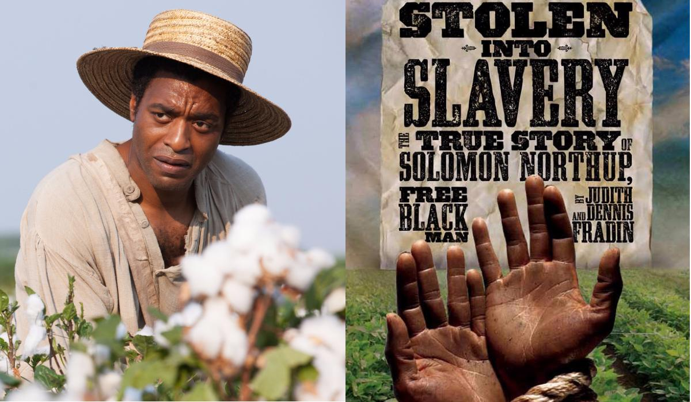
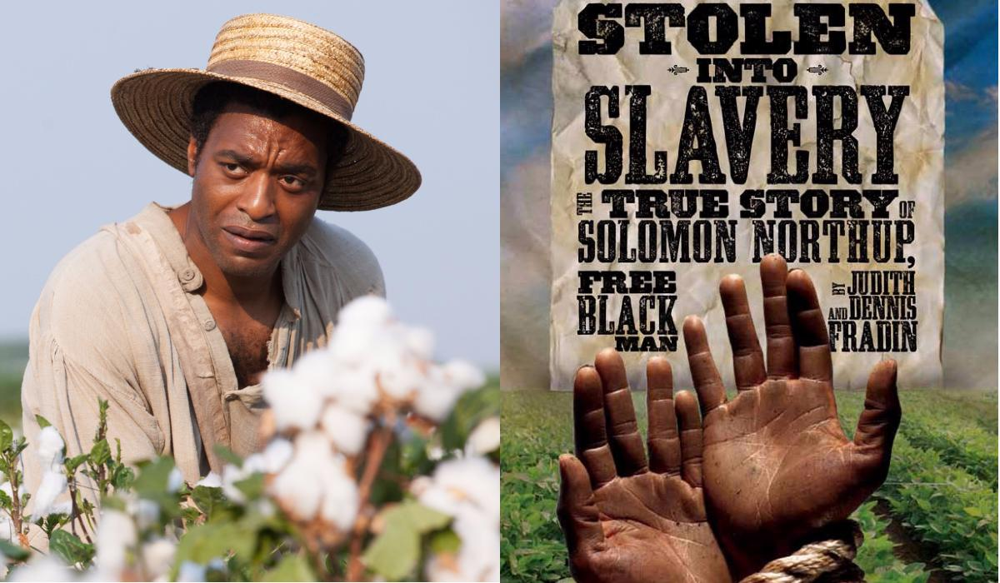
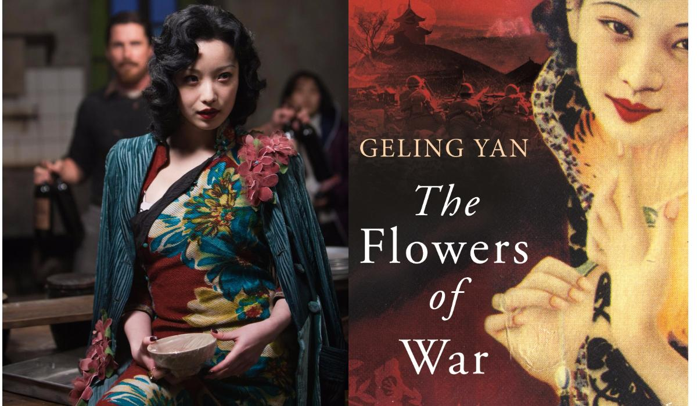
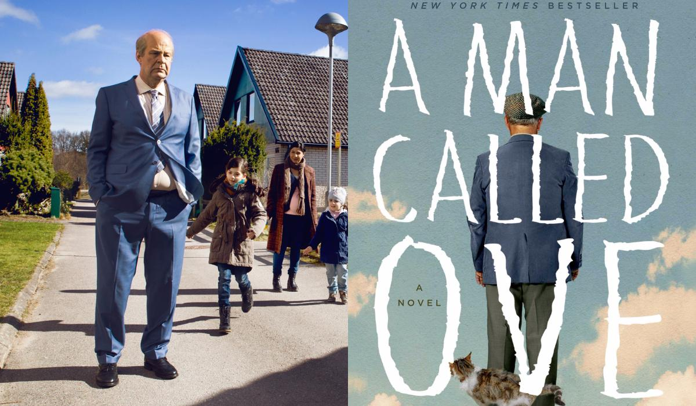

История образованного вольнорожденного афроамериканца, попавшего в рабство на долгих 12 лет и вынужденного жить ужасной жизнью раба без всяких надежд на освобождение.
Фильм основан на автобиографии Соломона Нортапа, написанной им в 1853 году.
Нет времени почитать бестселлер, который вам посоветовали все друзья? Не беда! Я составил список 3 лучших экранизаций бестселлеров последних лет. Смотрите с удовольствием!
История образованного вольнорожденного афроамериканца, попавшего в рабство на долгих 12 лет и вынужденного жить ужасной жизнью раба без всяких надежд на освобождение.
Фильм основан на автобиографии Соломона Нортапа, написанной им в 1853 году.
1937 год. Японско-китайская война. Гробовщик Джон приезжает в Китай на заработки и оказывается запертым в церкви вместе с ученицами местного монастыря и девушками из борделя. Чтобы спасти всех от военных, Джону приходится притвориться священником.
Сценарий «Цветы войны» был создан по мотивам произведения американской писательницы китайского происхождения Гелин Янь «13 цветов Нанкина»
Одинокий старик-мизантроп Уве решает покончить с собой, но его грандиозные суицидальные планы рушатся с появлением новых соседей — шумного семейства с разговорчивой мамой и дружелюбными ребятишками.
Актеру Рольфу Лассгорду, сыгравшему в фильме главную роль, к моменту начала съемок исполнилось 59 лет. Он одного возраста со своим персонажем Уве Линдалом